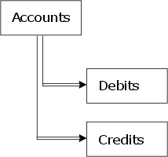
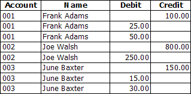
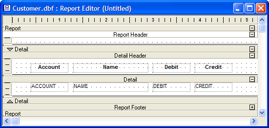
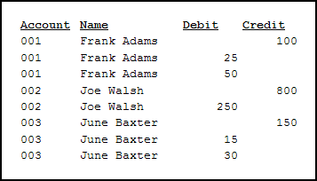

Designing Reports for Sets with One-to-Many Links
When you run a report, Alpha Anywhere treats a set as a single, composite table. For example, you have a set that links accounts to their respective debits and credits. For each record in the Account table, the Debits table can have multiple charges, and the Credits table multiple payments:

Set Diagram

Browse View of the Set
As with a single table, you can place any fields you want to include in the detail edit region and then run the report. Since the set is treated as a composite table, when you print the report, fields from the parent table are repeated once for each matching child record in either the Debits or Credits table:

Report Layout

Print Report
 Note : Fields from
the Debits table appear before fields from the
Credits table, since Debits
appears before Credits in the set.
Note : Fields from
the Debits table appear before fields from the
Credits table, since Debits
appears before Credits in the set.
In cases where the child is linked with a one-to-one link, fields placed on the report are treated as if they come from the parent table. Suppose in the previous example that the customer's name is stored in the Customer table, instead of in Accounts, and the Customer table is linked to the Accounts table with a one-to-one link. When the report is run, it would look like it did in the previous example, since fields from a one-to-one linked child table are treated the same as fields from its parent.
To prevent data from the primary table from repeating, you can create a grouping level using the Account field as the group break expression. To make the Credits and Debits data appear side-by-side instead of staggered, you can use a sub-report.
See Also